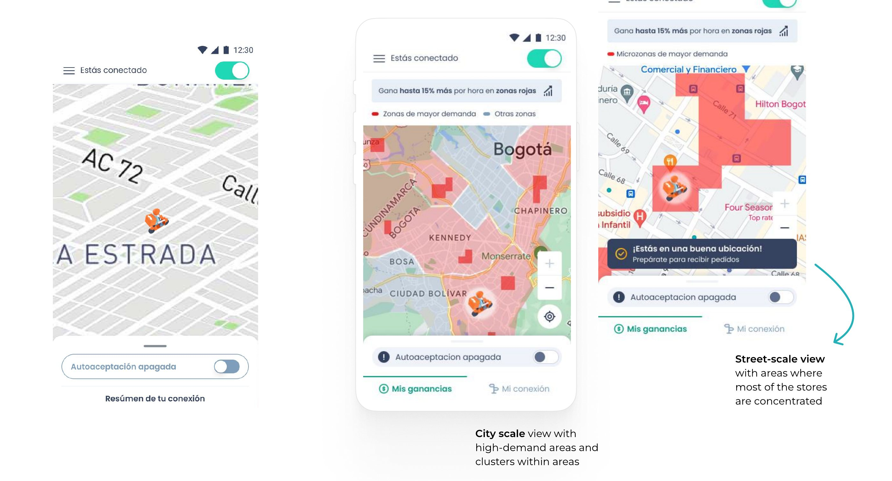

AI Product Design · Product Strategy
A leader who loves building.A designer who sees the bigger picture.
I connect design, code, and business. Scaling teams building AI products, while staying hands-on with product craft and prototyping in code. My background helps me connect strategy to product decisions that create business impact.
CASE STUDIES

LEADERSHIP
I’ve led design for whole lines of business, and built the teams to do it.
10+ years designing products, the last 6 leading teams at Dialpad and Rappi, across B2B SaaS and B2C. Alignment and shared context are how my teams move faster with quality.
SCOPE · DIALPAD CONNECT
CallingMessagingMeetingsAdmin platform
The whole app, connected: SMB and Enterprise, agents and company admins, on desktop, mobile and rooms solutions.
SCOPE · FULFILLMENT
Courier appShopper appDark storesForecasting
The whole logistics flow, from the moment a user places an order until it arrives, including deliveries in under 10 minutes.
EARLIERSr. Product Designer at Iunigo3+ years as Service Designer at the Cultural Innovation Lab, Argentina’s Ministry of Culture
ACROSS TEAMS & STAKEHOLDERS
- Member of the design leadership teamAt Dialpad, one of the 8 leads shaping the design org, with the Design System, Design Ops and Brand leads.
- Design’s voice at the tableAt Dialpad, with the Sr. Product Director, PMs and Engineering, and checkpoints with executive stakeholders. At Rappi, priorities with founders and VPs.
- The big pictureSeeing how projects connect across areas and talking with the teams they touch. A design system as one experience.
- Sprints and hackathonsDesign Sprint facilitator. I organize hackathons to keep teams experimenting.
IN THE DAILY WORK
- Craft at speedWeekly design reviews with leadership. High standards of craft, balanced with speed and execution.
- Prototypes in codeStill hands-on: a first concept in about an hour, then many iterations stakeholders could try.
- Agents and skillsA skills library for the team, and agents that automate tasks.
- Paper-cut fixes in codeI ship small, medium UX fixes straight to production.
LABS
A free space for experiments I build with AI.
When you can build almost anything you imagine, what matters is curiosity and making time to experiment. It's not always easy, but I love reading and trying new things.
AGENTS & SKILLS
Time back with the skills I built for my day to day.
MY HEALTH COACH
Conversational experience for everyday workout and health habits.
INTERIORS & 3D
Still loving my industrial design roots.